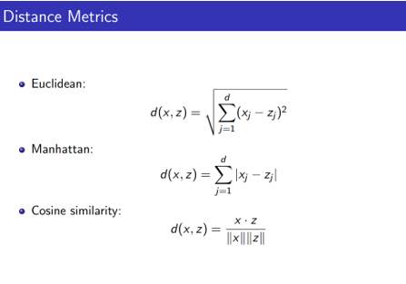
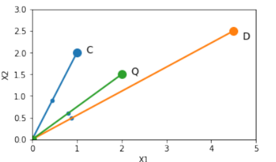
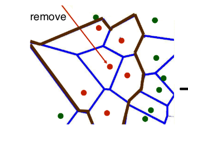
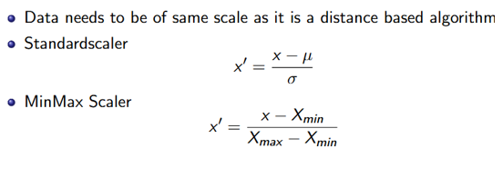
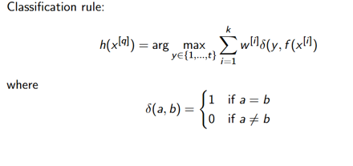
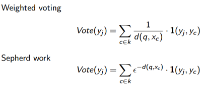
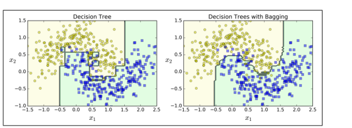
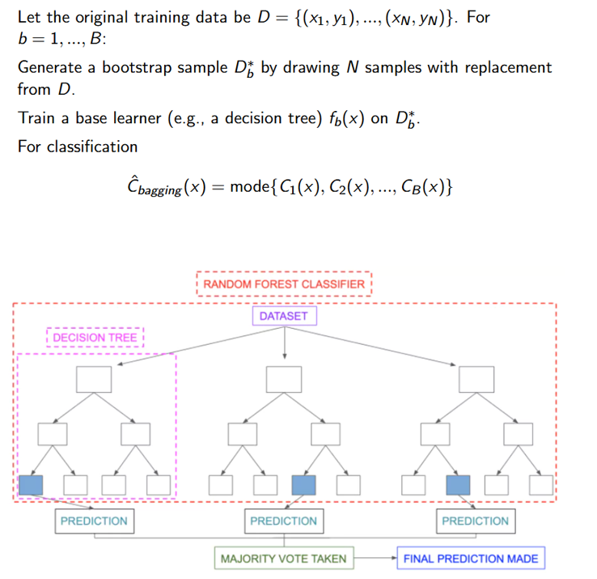
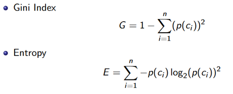

Week 1 — Sept 11
Projects
-
Digging into our dataset for flare predictions (SWAN-SF) and supervised machine learning through
Random Forest and kNN classifier.
-
Using CCMC score cards and ensembling techniques to build a more robust/accurate
combination of space weather simulations.
Topic Selection
Pick 1 or 2 from the following topics:
- Thompson sampling
- Multi-armed bandit algorithm
- Monte Carlo search tree
- Random Forest
- kNN Classifier
- SWAN-SF dataset
KNN
- The K-nearest neighbors algorithm is mostly used for classification (also usable for regression).
- Lazy learner: no explicit model is built until prediction time.
- Instance-based & non-parametric: decisions are made by comparing the query to stored samples.
Probabilistic interpretation: \( P(Y=c \mid X=x) \)
- Estimate the posterior probability of a new data point belonging to class \( c \).
- Quantify uncertainty from neighbor votes.

Algorithm Workflow
- Choose hyperparameters (k, distance metric).
- Compute distances \( d(x, x_i) \).
- Select k nearest neighbors.
- Classification: majority vote; Regression: average.
Hyperparameter K
- Bias–Variance trade-off:
- Small k → sensitive to noise (high variance).
- Large k → over-smoothing (high bias).
- Pick via cross-validation; rule of thumb \( k \lesssim \sqrt{n} \). Prefer odd k for binary classes.
Distance Metric
Accuracy depends strongly on the metric.
Common choices
- Numerical: Euclidean, Manhattan
- Categorical: Hamming
- High-dimensional: Cosine, Jaccard
- Time series: DTW (Dynamic Time Warping)


Considerations
Curse of Dimensionality
Distances become less discriminative in high-D. Use feature selection or dimensionality reduction.
Feature Selection
- Filter: information gain, chi-square, correlation.
- Wrapper: forward/backward selection.
- Embedded: weighted KNN, etc.
Dimensionality Reduction
- Remove redundant/irrelevant attributes to reduce overfitting.

Feature Scaling
- Normalize/standardize features (StandardScaler or MinMaxScaler).

Complexity
Brute-force KNN is \( O(n \cdot d) \). KD-tree/Ball-tree can help (KD for low-D, Ball for higher-D).
Imbalanced Data
KNN is dominated by majority class; apply resampling or class weighting.
Decision Boundary
- Implied by neighbor regions; visualize via Voronoi diagrams in 2D.
Weighted KNN
Weight neighbors by inverse distance.


Adaptive Neighborhood (radius-based KNN)
Use all points within radius \( r \) to account for density variations.
Advantages
- Simple, versatile, interpretable.
Disadvantages
- Heavy in high-D; sensitive to noise and scaling.
Random Forest
Ensemble of decision trees where multiple trees vote for the outcome. Reduces variance versus a single tree.
Decision Tree Basics
- Splitting criteria: Entropy, Gini.
- Information Gain measures usefulness of a split.

Bagging
- Train many trees on bootstrap samples; aggregate predictions.

Python Example
from sklearn.ensemble import BaggingClassifier
from sklearn.tree import DecisionTreeClassifier
bag_clf = BaggingClassifier(
DecisionTreeClassifier(),
n_estimators=500,
max_samples=100,
bootstrap=True,
n_jobs=-1
)
bag_clf.fit(X_train, y_train)
y_pred = bag_clf.predict(X_test)
n_estimators: trees; max_samples: samples per tree;
bootstrap: sampling with replacement; n_jobs=-1: use all CPUs.
Feature Importance
- Mean Decrease Gini (classification)
- Permutation Importance (accuracy drop)

OOB Score
- Use out-of-bag samples to estimate generalization without a separate validation set.
Key Hyperparameters
- Number of trees (B)
- Max features per split (mtry)
Computational Aspect
Approx. \( O(B \cdot n \log n) \).
Pros
- Strong default performance; mitigates overfitting.
Cons
- Heavier compute; less interpretable than a single tree.
Considerations during implementation
Class weight — Random Forest
- Imbalanced classes: use
class_weight="balanced", "balanced_subsample", or a dict.
- SMOTE (KNN-based) for synthetic minority samples.
Evaluation metrics
- Precision, Recall, F1
- ROC–AUC
- HSS (Heidke Skill Score), TSS (True Skill Statistic)
How much better we are at finding real events:
$$
TSS = \frac{TP}{TP + FN} - \frac{FP}{FP + TN}
$$
Forecast better than random:
$$
HSS = \frac{2 \times (TP \times TN - FN \times FP)}
{(P \times (FN + TN) + (TP + FP) \times N)}
$$
Collab